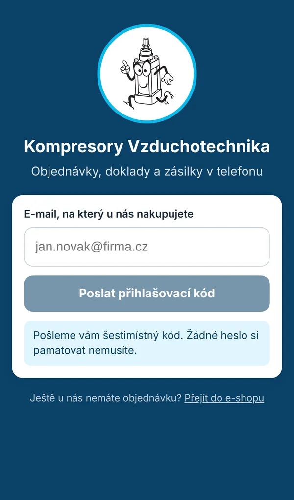

Vlastní firma · v provozu od října 2026
Zákaznická aplikace
Aplikace do mobilu pro zákazníky našeho e-shopu. Bez hesla: zákazník zadá e-mail, dostane šestimístný kód a vidí své objednávky, zásilky, doklady i reklamace. Instaluje se přímo z prohlížeče, bez obchodu s aplikacemi.

- Přihlašovací kódšest číslic do e-mailu, žádné heslo
- Zásilka je na cestěsledování přímo v aplikaci
- Faktura ke staženídoklady v PDF
- Oblíbené zbožírychlý opakovaný nákup
Přihlašovací obrazovka je skutečná, oznámení vedle ní jsou ilustrace.
- místo hesla
- 6 číslic
- automatických testů přihlášení
- 48
- kontrol po každém nasazení
- 18
- instalace z prohlížeče
- PWA
Zadání
Méně telefonátů, víc přehledu
-
Kde je můj balík?
Nejčastější dotazy zákazníků byly o stavu objednávky, faktuře nebo reklamaci. Odpovídal na ně člověk.
-
Hesla se zapomínají
Klasický účet s heslem je pro řadu zákazníků překážka. Heslo zapomenou a nakoupí jinde.
Aplikace bere data z middlewaru, takže zákazník vidí totéž co my: objednávku, zásilku, doklady i reklamace. Přihlášení je jednorázovým kódem z e-mailu.
Co jsem postavil a jak to pomáhá
Co aplikace umí
-
Přihlášení kódem z e-mailu
Žádné heslo. Aplikace navíc neprozradí, jestli zadaný e-mail u nás nakupuje, takže se přes ni nedá zjišťovat, kdo je náš zákazník.
Bezpečné a jednoduché i pro lidi, kteří hesla nemají rádi.
-
Objednávky a zásilky
Přehled objednávek se sledováním zásilky.
Méně telefonátů „kde je můj balík“.
-
Doklady v PDF
Faktury a další doklady ke stažení přímo v mobilu.
Účetní zákazníka má doklad hned.
-
Reklamace
Přehled reklamací a jejich stavu na jednom místě.
Zákazník ví, jak jeho reklamace pokračuje.
-
Oblíbené a seznamy
Oblíbené zboží a nákupní seznamy pro opakované nákupy.
Pravidelný materiál objednáte na pár klepnutí.
-
Přehled pro firmy a oznámení
Firmy mají přehled svých nákupů. Aplikace posílá oznámení do mobilu, sama se aktualizuje a má návod na instalaci.
Vždy aktuální verze bez starostí.
Technologie PWA · push oznámení · napojení přes middleware Ventilek · automatické testy
Další projekty
Co jsem postavil dál
Spolupráce
Chcete něco podobného pro svůj e-shop?
Napište mi, co vás nejvíc zdržuje. Podívám se, co by šlo zjednodušit, propojit nebo zautomatizovat.
- Stav Běží od října 2026
- Pro zákazníky Kompresory-Vzduchotechnika.cz
- Instalace z prohlížeče, bez obchodu